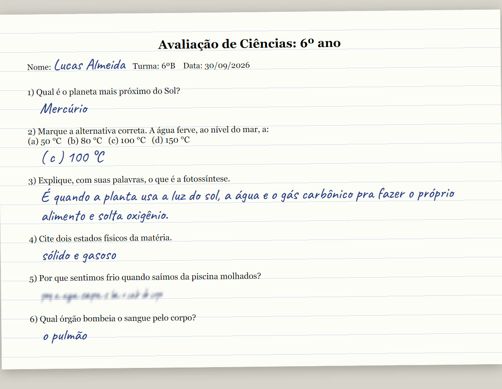
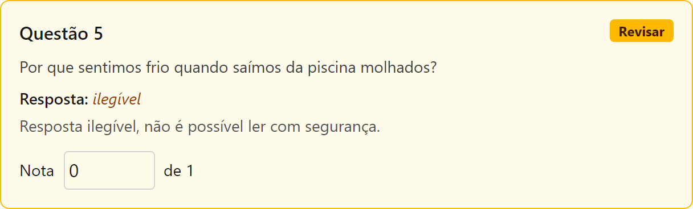
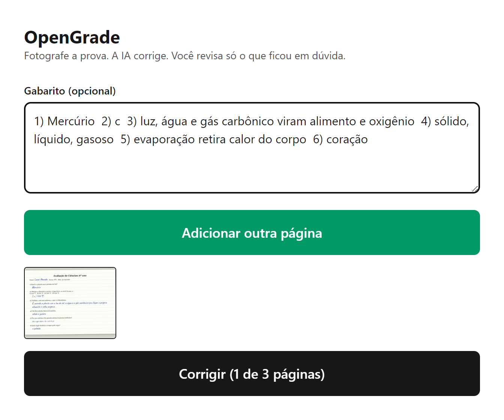
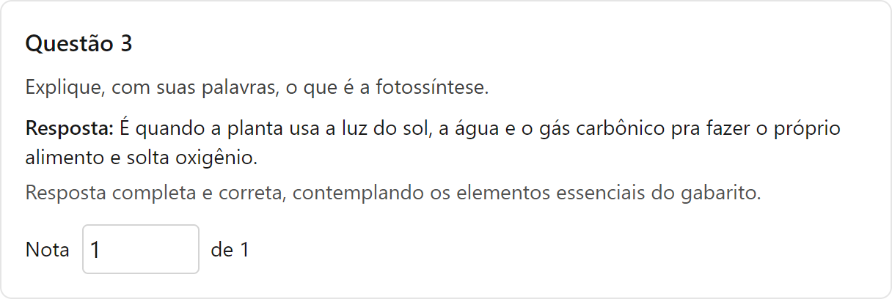
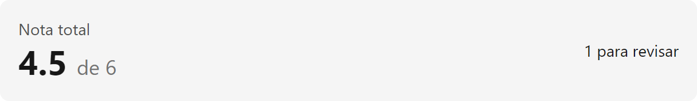

Semana da Tecnologia · UNASP 2026
Correção de provas com IA, em código aberto.
Revise menos. Ensine mais.
Eduardo Ribeiro · ADS


O problema
Fora do horário de aula. Prova discursiva é a pior: ler a letra do aluno e julgar cada resposta.
Na UNASP e entre os professores consultados, todos ainda corrigem assim.
Para quem
Fundamental, médio e superior. Corrige a pilha e revisa só o que ficou em dúvida.
Integra o sistema, usa a própria chave de IA e fica com os dados dos alunos.
Recebe a nota e a justificativa de cada questão mais rápido.
Passo 1 de 3
Pelo celular, até 3 páginas. O gabarito é opcional: sem ele, a IA avalia pelo próprio conhecimento.

Passo 2 de 3
Transcreve a letra do aluno, compara com o gabarito e justifica cada nota em uma frase.

Passo 3 de 3
Quando não consegue ler, a IA não inventa: marca Revisar. O professor ajusta e o total atualiza na hora.

Diferencial
| O que importa | Soluções pagas | OpenGrade |
|---|---|---|
| Código aberto | Não, serviço fechado | Sim, no GitHub |
| Chave de IA | Da empresa | Aberta |
| Dados dos alunos | Ficam com terceiros | Ficam com o dono |
| Preço | Assinatura | Grátis para hospedar |
ProvaCorrigida, Grades.ia, Educa AI e Prognose provam que o mercado paga por isso.
Próximos passos
Análise de desempenho da turma
Provas adaptadas para alunos autistas
Agente no WhatsApp que cria e corrige provas
Aprende a letra de cada aluno, sem treinar modelo
Em desenvolvimento
Cada prova corrigida vira dado: quais questões a turma mais errou e quem precisa de reforço.
exemplo ilustrativo
Média
7,2
Corrigidas
28
Reforço
4 alunos
Acerto por questão
Q1
92%
Q2
85%
Q3
71%
Q4
64%
Q5
38% · revisar evaporação
Em desenvolvimento
O professor pede uma prova numa mensagem e recebe pronta. Depois manda as fotos e recebe corrigida. Sem instalar nada.
Em desenvolvimento
Questão original
Considerando o conceito de evaporação estudado em aula, explique, com suas palavras, por que sentimos frio ao sair da piscina molhados, relacionando o fenômeno com a perda de calor do corpo.
Versão adaptada
Você saiu da piscina. Está molhado. Sente frio. Por quê?
( A ) A água evapora e leva o calor do corpo
( B ) A água da piscina é gelada
Frases curtas
Uma pergunta por vez
Alternativas no lugar de texto longo
Mesma habilidade avaliada
Em desenvolvimento
Antes de aplicar, o OpenGrade confere se cada questão está na habilidade certa e na série certa.
exemplo
Questão 1 · comparar frações
EF06MA07
Questão 2 · fração e decimal
EF06MA08
Questão 3 · conteúdo do 7º ano
trocar
Plano de aula da semana gerado
4 aulas
Aponte a câmera e veja o código
github.com/duribeiro/opengrade